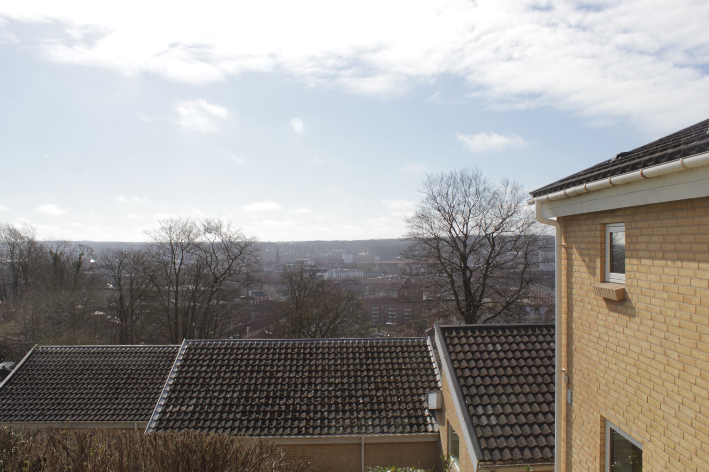
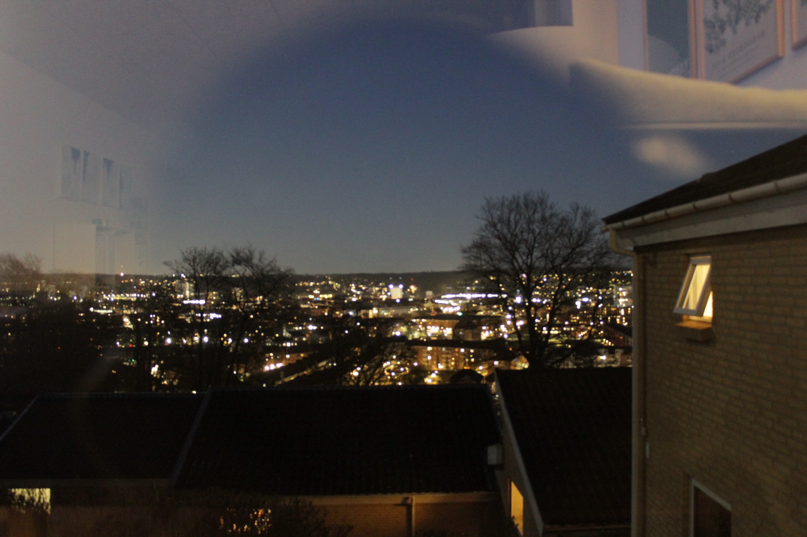
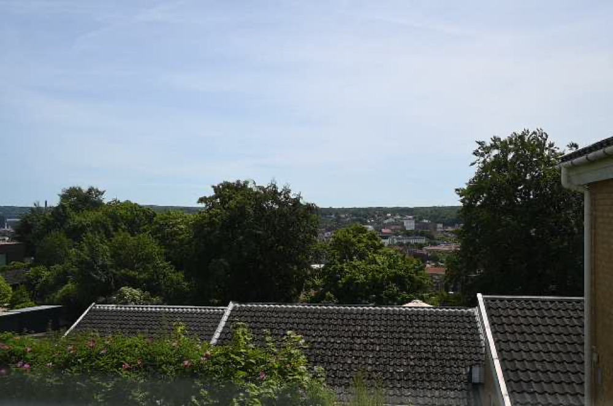

Capture uden drama
Robuste edge-kameraer med lokal buffer, relay-styring, Nikon Z30 support og kontrolleret upload til Headend.

Byggepladsens hukommelse
Dokumentation over tid. Capture, kvalitet, drift og compliance samlet i et sikkert system til byggepladser, sites og projekter.
Billedligt dokumenteret
TimeLapse Pro er bygget til steder, hvor kameraet ikke bare skal tage billeder, men bevise hvad der skete, hvornår det skete, og om systemet var sundt imens.
Edge-enhederne arbejder lokalt, Headend styrer konfiguration og opdateringer, og UI'et samler billeder, tags, kvalitet, CMDB og rapportering.
Robuste edge-kameraer med lokal buffer, relay-styring, Nikon Z30 support og kontrolleret upload til Headend.
Thumbnails, blur-score, lysvurdering, tags og søgbare metadata til udvælgelse af rapporter, dataudtræk og timelapse-video.
CMDB, change tickets, signerede artifacts, backup-evidens og compliance-status samlet i samme administrationsflade.

Dag, nat, vejr og forandring
Systemet holder styr på capture-status, billedkvalitet, upload, kameraafvigelser, netværk og opdateringer. Det gør timelapse til mere end en video: det bliver et sporbarhedsgrundlag.
Åbn kundeportalenHeadend + Edge
Kameraet fortsætter lokalt med buffer og kvalitetskontrol, også når forbindelsen er dårlig.
Konfiguration, CMDB, opdateringer, artifacts og compliance styres centralt fra Headend.
Edge skal ikke hente direkte fra GitHub eller apt. Opdateringer pakkes, testes, signeres og distribueres fra Headend.
LAB-funktioner til preview, full capture, fokusarbejde og kommende video-streaming.
Governance fra starten
TimeLapse Pro er designet med RBAC, SFTP-isolation, signerede artifacts, CMDB, GRC-dashboard og dokumenteret update-flow.
LAB og idriftsættelse
Preview, full capture, fokus-test, kamera-profil og driftstilstand samles i LAB, så første site kan sættes op med mindre gætværk og bedre evidens.

Klar til første site